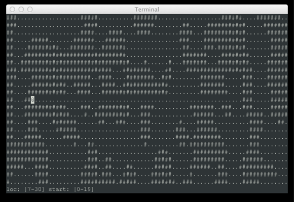

Main Loop with Clojure
(LOOP EYE HAND COMPUTER)
Simplest Possible Main-Loop
...and it is possibly useless
Bare Bones Main-Loop
(defn main-loop [dt]
(update dt)
(render dt))
But, where is the state (world)?
Main-Loop with State as an Explicit Argument
(defn main-loop [world dt]
(let [new-world (update world dt)]
(render new-world dt)
new-world))
But, where are the user inputs (events)?
Main-Loop with State & Events as Arguments
(defn main-loop [world events dt]
(let [new-world (update world events dt)]
(render new-world dt)
new-world))
Not bad.
60FPS
\[{1000 \over 60} = 16.6\overline{6}\]
We need to call render once every 16.667ms to keep our game running at 60fps.
[................] 0/16 ms
[ ]
[ ]
[UUUUU...........] 5/16 ms
[ ]
[ ]
[UUUUURRR........] 8/16 ms
[ ]
[ ]
[UUUUURRR........]
[UUURRRRRRRRRRRRR] 16/16 ms
[ ]
[UUUUURRR........]
[UUURRRRRRRRRRRRR] 16/16 ms
[RRRRRRRRRRR.....] 11/16 ms
- Should we schedule
updateimmediately afterrender? - Should we run
renderandupdatein separate threads?
Under The Hood
What Time Is It?
Basically...
(defn timestamp [] (System/currentTimeMillis))
...but more precisely
(defn timestamp []
(-> (System/nanoTime)
(/ 1000000.0)))
Counting Time
(defn make-dtfn []
(let [t (atom (timestamp))]
(fn []
(let [now (timestamp)
dt (- now @t)]
(reset! t now)
dt))))
Usage:
(let [dtfn (make-dtfn)]
(println (dtfn)) ;; 0.12153200060129166
(Thread/sleep 1000)
(println (dtfn)) ;; 1001.2701580002904
(println (dtfn)) ;; 0.9757639989256859
(Thread/sleep 1000)
(println (dtfn))) ;; 1061.0490560010076
Practically integers should be alright.
Exit Game
(def escape-hatch (promise))
(while (not (realized? escape-hatch))
...)
(deliver escape-hatch nil)
Calling Main-Loop
Frame Rate vs Rate of Update
Are they supposed to be equal?
- Frame rate can be boosted or degraded according to system resources.
- Updates should be frequent, and rate of updates should be stable.
- Updates should take into consideration time passed rather than assuming a constant period.
- Care must be taken to present a consistent world if the rendering is happening in a separate thread.
Tight, Infinite Loop
(let [dtfn (make-dtfn)]
(loop [world (make-world)]
(let [events (query-events)
dt (dtfn)]
(recur (main-loop world events dt)))))
Infinite Cooperative Loop
(let [dtfn (make-dtfn)]
(loop [world (make-world)]
(let [events (query-events)
dt (dtfn)
new-world (main-loop world events dt)]
(Thread/yield) ;; <--
(recur new-world))))
Terminating Cooperative Loop
(let [dtfn (make-dtfn)
escape-hatch (promise)] ;; <--
(loop [world (make-world)]
(let [events (query-events)
dt (dtfn)
new-world (main-loop world events dt escape-hatch)]
(if-not (realized? escape-hatch) ;; <--
(do
(Thread/yield)
(recur new-world))))))
Case Studies
Case Study 1: LÖVE
function love.load() ... end
function love.update() ... end
function love.draw() ... end
LÖVE Example
-- Example: Basic callbacks
function love.load()
love.graphics.setFont(
love.graphics.newFont(11)
)
end
elapsed = 0
-- Update: Called each frame. Update the
-- state of your game here.
function love.update(dt)
elapsed = elapsed + dt
end
-- Draw: Called each frame. The game
-- should be drawn in this functions.
function love.draw()
love.graphics.print(
"Elapsed time: " .. elapsed, 100, 100
)
end
LÖVE Main Loop
function love.run()
if love.load then love.load(love.arg.parseGameArguments(arg), arg) end
-- We don't want the first frame's dt to include time taken by love.load.
if love.timer then love.timer.step() end
local dt = 0
-- Main loop time.
return function()
-- Process events.
if love.event then
love.event.pump()
for name, a,b,c,d,e,f in love.event.poll() do
if name == "quit" then
if not love.quit or not love.quit() then
return a or 0
end
end
love.handlers[name](a,b,c,d,e,f)
end
end
-- Update dt, as we'll be passing it to update
if love.timer then dt = love.timer.step() end
-- Call update and draw
if love.update then love.update(dt) end -- will pass 0 if love.timer is disabled
if love.graphics and love.graphics.isActive() then
love.graphics.origin()
love.graphics.clear(love.graphics.getBackgroundColor())
if love.draw then love.draw() end
love.graphics.present()
end
if love.timer then love.timer.sleep(0.001) end
end
end
LÖVE Main Loop - Abbreviated Version
function love.run()
-- Process events.
dt = ...
love.update(dt)
love.draw()
love.graphics.present()
love.timer.sleep(0.001)
end
Case Study 2: play-cljs
(defprotocol Screen
(on-show [screen])
(on-hide [screen])
(on-render [screen])
(defprotocol Game
(start [game])
...
(render [game content])
...
(get-screen [game])
(set-screen [game screen])
...)
play-cljs Example
(reify p/Screen
(on-show [this]
(reset! state {:text-x 20 :text-y 30}))
(on-hide [this])
(on-render [this]
(p/render game
[[:fill {:color "lightblue"}
[:rect {:x 0 :y 0 :width 500 :height 500}]]
[:fill {:color "black"}
[:text {:value "Hello, world!"
:x (:text-x @state)
:y (:text-y @state)
:size 16
:font "Georgia"
:style :italic}]]])
(swap! state update :text-x inc)))
play-cljs Main Loop
this._draw = function() {
var now = window.performance.now();
var time_since_last = now - this._lastFrameTime;
var target_time_between_frames = 1000 / this._targetFrameRate;
// only draw if we really need to; don't overextend the browser.
// draw if we're within 5ms of when our next frame should paint
// (this will prevent us from giving up opportunities to draw
// again when it's really about time for us to do so). fixes an
// issue where the frameRate is too low if our refresh loop isn't
// in sync with the browser. note that we have to draw once even
// if looping is off, so we bypass the time delay if that
// is the case.
var epsilon = 5;
if (
!this._loop ||
time_since_last >= target_time_between_frames - epsilon
) {
//mandatory update values(matrixs and stack)
this.redraw();
this._frameRate = 1000.0 / (now - this._lastFrameTime);
this._lastFrameTime = now;
// If the user is actually using mouse module, then update
// coordinates, otherwise skip. We can test this by simply
// checking if any of the mouse functions are available or not.
// NOTE : This reflects only in complete build or modular build.
if (typeof this._updateMouseCoords !== 'undefined') {
this._updateMouseCoords();
}
}
// get notified the next time the browser gives us
// an opportunity to draw.
if (this._loop) {
this._requestAnimId = window.requestAnimationFrame(this._draw);
}
}.bind(this);
this._setProperty = function(prop, value) {
this[prop] = value;
if (this._isGlobal) {
window[prop] = value;
}
}.bind(this);
play-cljs Main Loop - continued
p5.prototype.redraw = function(n) {
var numberOfRedraws = parseInt(n);
if (isNaN(numberOfRedraws) || numberOfRedraws < 1) {
numberOfRedraws = 1;
}
var context = this._isGlobal ? window : this;
var userSetup = context.setup;
var userDraw = context.draw;
if (typeof userDraw === 'function') {
if (typeof userSetup === 'undefined') {
context.scale(context._pixelDensity, context._pixelDensity);
}
var callMethod = function(f) {
f.call(context);
};
for (var idxRedraw = 0; idxRedraw < numberOfRedraws; idxRedraw++) {
context.resetMatrix();
if (context._renderer.isP3D) {
context._renderer._update();
}
context._setProperty('frameCount', context.frameCount + 1);
context._registeredMethods.pre.forEach(callMethod);
userDraw();
context._registeredMethods.post.forEach(callMethod);
}
}
};
Case Study 3: The Caves of Clojure

TCoC Main Loop
(defn run-game [game screen]
(loop [{:keys [input uis] :as game} game]
(when (seq uis)
(recur (if input
(-> game
(dissoc :input)
(process-input input))
(-> game
(update-in [:world] tick-all)
(draw-game screen)
(clear-messages)
(get-input screen)))))))
Note: get-input blocks.